The Jazz Messengers
- 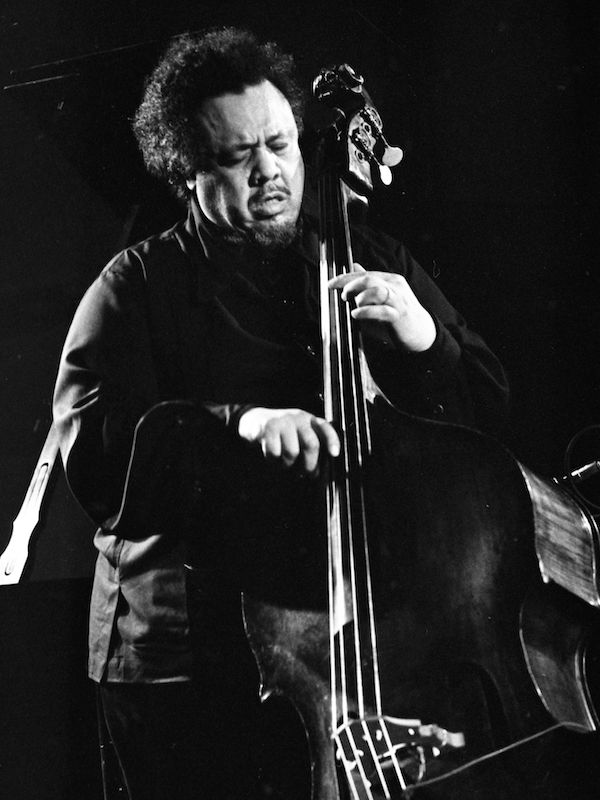
- 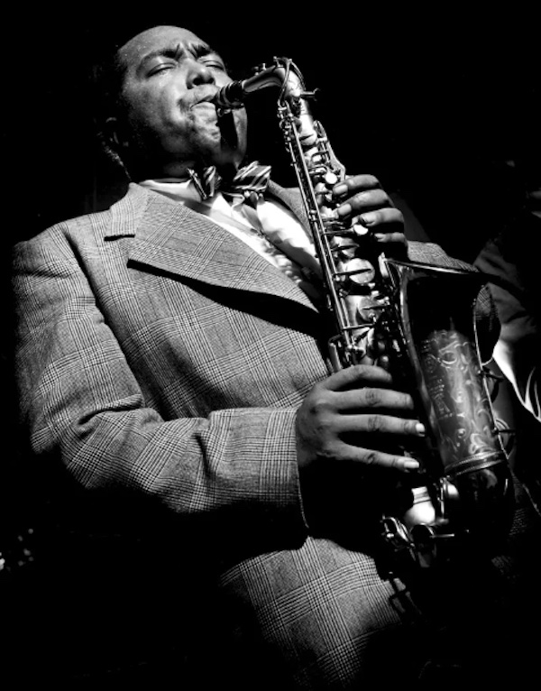
- 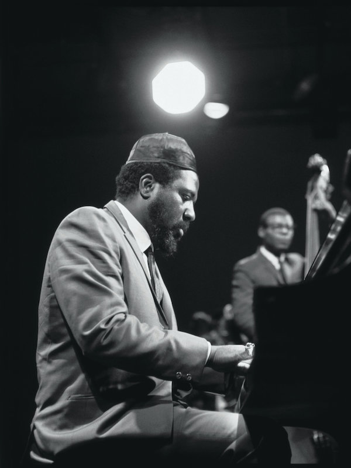
- 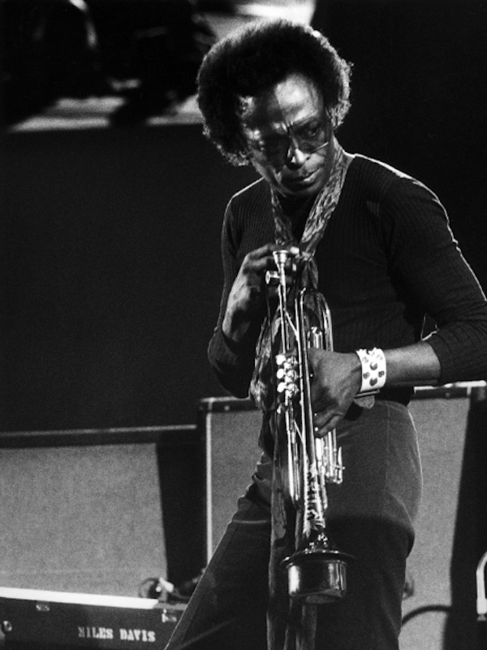
- 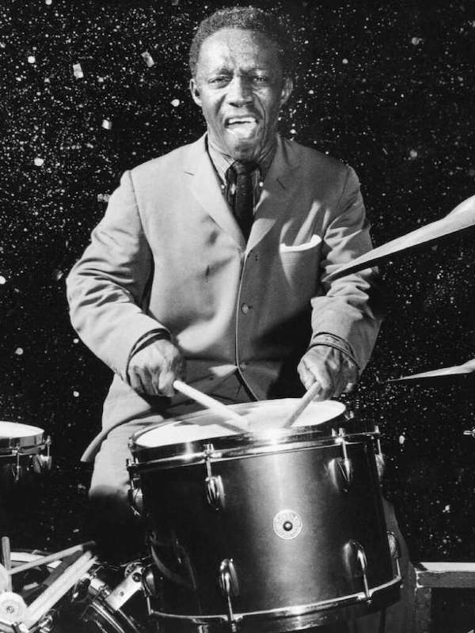
- 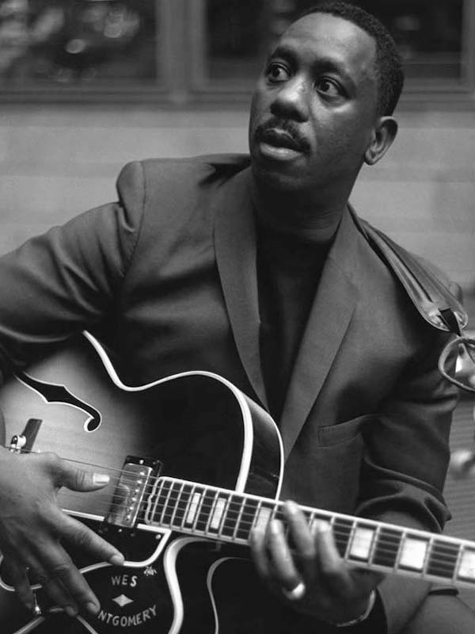
Charles Mingus
A major proponent of collective improvisation, he is considered to be one of the greatest jazz musicians and composers in history, with a career spanning three decades and collaborations with other jazz musicians such as Louis Armstrong, Duke Ellington, Charlie Parker, Dizzy Gillespie, and Herbie Hancock.
His compositions retained the hot and soulful feel of hard bop, drawing heavily from black gospel music and blues, while sometimes containing elements of Third Stream, free jazz, and classical music. He once cited Duke Ellington and church as his main influences.
Mingus' compositions continue to be played by contemporary musicians ranging from the repertory bands Mingus Big Band, Mingus Dynasty, and Mingus Orchestra, to the high school students who play the charts and compete in the Charles Mingus High School Competition.
Charlie Parker
Nicknamed "Bird" or "Yardbird", was an American jazz saxophonist, band leader and composer. Parker was a highly influential soloist and leading figure in the development of bebop, a form of jazz characterized by fast tempos, virtuosic technique, and advanced harmonies.
Parker was an extremely fast virtuoso and introduced revolutionary harmonic ideas into jazz, including rapid passing chords, new variants of altered chords, and chord substitutions. Primarily a player of the alto saxophone, Parker's tone ranged from clean and penetrating to sweet and somber. He was known for the very clear, sweet and articulate notes he could produce from the saxophone.
Parker was an icon for the hipster subculture and later the Beat Generation, personifying the jazz musician as an uncompromising artist and intellectual rather than just an entertainer.
Thelonious Monk
He had a unique improvisational style and made numerous contributions to the standard jazz repertoire, including "'Round Midnight", "Blue Monk", "Straight, No Chaser", "Ruby, My Dear", "In Walked Bud", and "Well, You Needn't". Monk is the second-most-recorded jazz composer after Duke Ellington.
Monk's compositions and improvisations feature dissonances and angular melodic twists and are consistent with his unorthodox approach to the piano, which combined a highly percussive attack with abrupt, dramatic use of switched key releases, silences, and hesitations.
Monk was renowned for a distinct look which included suits, hats, and sunglasses. He was also noted for an idiosyncratic habit during performances: while other musicians continued playing, Monk would stop, stand up, and dance for a few moments before returning to the piano.
Miles Davis
It was his first work with saxophonist John Coltrane and bassist Paul Chambers, key members of the sextet he led into the early 1960s. During this period, he alternated between orchestral jazz collaborations with arranger Gil Evans, such as the Spanish music-influenced Sketches of Spain (1960), and band recordings, such as Milestones (1958) and Kind of Blue (1959). The latter recording remains one of the most popular jazz albums of all time, having sold over five million copies in the U.S.
In 2006, Davis was inducted into the Rock and Roll Hall of Fame, which recognized him as "one of the key figures in the history of jazz". Rolling Stone described him as "the most revered jazz trumpeter of all time, not to mention one of the most important musicians of the 20th century," while Gerald Early called him inarguably one of the most influential and innovative musicians of that period.
Art Blakey
Blakey made a name for himself in the 1940s in the big bands of Fletcher Henderson and Billy Eckstine. He then worked with bebop musicians Thelonious Monk, Charlie Parker, and Dizzy Gillespie.
In the mid-1950s, Horace Silver and Blakey formed the Jazz Messengers, a group that the drummer was associated with for the next 35 years. The group was formed as a collective of contemporaries, but over the years the band became known as an incubator for young talent, including Freddie Hubbard, Wayne Shorter, Lee Morgan, Benny Golson, Kenny Dorham, Hank Mobley, Donald Byrd, Jackie McLean, Johnny Griffin, Curtis Fuller, Chuck Mangione, Chick Corea, Keith Jarrett, Cedar Walton, Woody Shaw, Terence Blanchard, and Wynton Marsalis.
The Biographical Encyclopedia of Jazz calls the Jazz Messengers "the archetypal hard bop group of the late 50s".
Wes Montgomery
Montgomery was known for an unusual technique of plucking the strings with the side of his thumb and his extensive use of octaves, which gave him a distinctive sound.
His recordings up to 1965 were oriented towards hard bop, soul jazz, and post bop, but around 1965 he began recording more pop-oriented instrumental albums that found mainstream success. His later guitar style influenced jazz fusion and smooth jazz.
Instead of using a guitar pick, Montgomery plucked the strings with the fleshy part of his thumb, using down strokes for single notes and a combination of up strokes and down strokes for chords and octaves. He developed this technique not for technical reasons but for the benefit of his neighbors. He worked long hours as a machinist before his music career began and practiced late at night. To keep neighbors from complaining, he played quietly by using his thumb.
Jazz facts
- What is Jazz?
- Jazz is a music genre that originated in the African-American communities of New Orleans, Louisiana in the late 19th and early 20th centuries, with its roots in blues and ragtime.Since the 1920s Jazz Age, it has been recognized as a major form of musical expression in traditional and popular music. Jazz is characterized by swing and blue notes, complex chords, call and response vocals, polyrhythms and improvisation.
- What is the meaning of the word Jazz?
- The origin of the word jazz has resulted in considerable research, and its history is well documented. It is believed to be related to jasm, a slang term dating back to 1860 meaning "pep, energy". The earliest written record of the word is in a 1912 article in the Los Angeles Times in which a minor league baseball pitcher described a pitch which he called a "jazz ball" "because it wobbles and you simply can't do anything with it".
- What is Bebop?
- In the early 1940s, bebop-style performers began to shift jazz from danceable popular music toward a more challenging "musician's music". The most influential bebop musicians included saxophonist Charlie Parker, pianists Bud Powell and Thelonious Monk, trumpeters Dizzy Gillespie and Clifford Brown, and drummer Max Roach. Divorcing itself from dance music, bebop established itself more as an art form, thus lessening its potential popular and commercial appeal.
- What is Modal Jazz?
- Modal jazz is a development which began in the later 1950s which takes the mode, or musical scale, as the basis of musical structure and improvisation. Previously, a solo was meant to fit into a given chord progression, but with modal jazz, the soloist creates a melody using one (or a small number of) modes. The emphasis is thus shifted from harmony to melody: "Historically, this caused a seismic shift among jazz musicians, away from thinking vertically (the chord), and towards a more horizontal approach (the scale)", explained pianist Mark Levine.
- 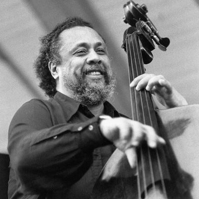
- 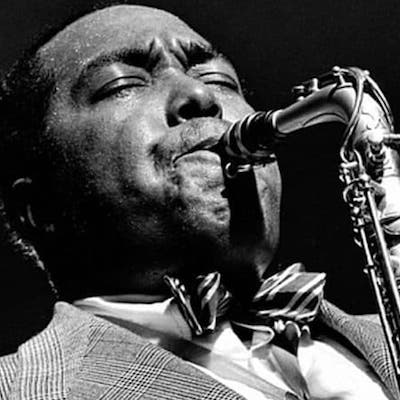
- 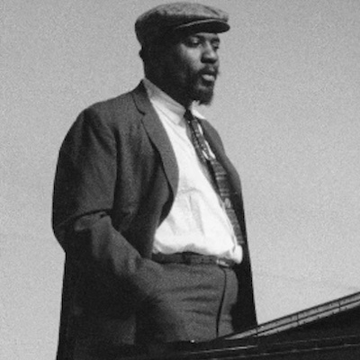
- 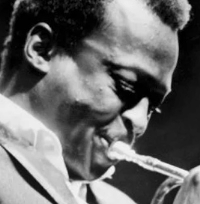
- 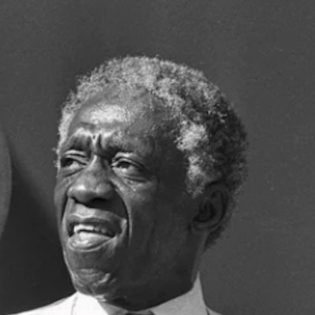
- 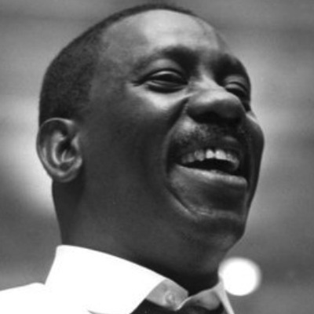
Contact Us

- sayhello@jazzmessengers.com
- +55 (48) 9999-9999
- Jazz Avenue, nº 1914
- New Orleans - US
- Donate 0 bitcoins
- Mon - Fri from 8am to 6pm